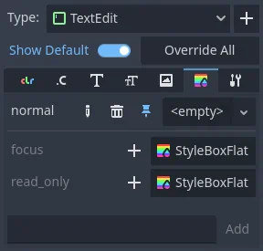

Sử dụng trình chỉnh sửa theme
Bài viết này giải thích cách tạo và quản lý theme UI bằng trình chỉnh sửa Godot và công cụ theme editor của nó. Chúng tôi khuyên bạn nên làm quen với những kiến thức cơ bản về skin/theme cho GUI bằng cách đọc Giới thiệu về tùy biến giao diện GUI trước khi bắt đầu.
Theme editor là một công cụ dạng bảng dưới cùng, tự động kích hoạt khi một resource Theme được chọn để chỉnh sửa. Nó chứa giao diện cần thiết để thêm, xóa và điều chỉnh các theme type và theme item. Nó có một khu vực xem trước để thử nghiệm thay đổi trực tiếp, cùng một hộp thoại cửa sổ để thao tác hàng loạt trên các theme item.
Tạo một theme
Giống như mọi resource khác, theme có thể được tạo trực tiếp trong FileSystem dock bằng cách nhấp chuột phải và chọn New Resource..., sau đó chọn Theme và nhấp Create. Cách này đặc biệt hữu ích để tạo theme dùng cho toàn dự án.
Theme cũng có thể được tạo từ bất kỳ control node nào. Chọn một control node trong cây scene, rồi trong Inspector đi đến thuộc tính theme. Từ đó bạn có thể chọn New Theme.

Thao tác này sẽ tạo một theme trống và mở theme editor. Lưu ý rằng resource được tạo theo cách này mặc định được gói cùng scene. Hãy dùng menu ngữ cảnh để lưu theme mới ra một file riêng.
Mặc dù theme editor cung cấp công cụ để quản lý theme type và item, theme còn chứa font mặc định (font dự phòng) mà bạn chỉ có thể chỉnh sửa bằng Inspector dock. Điều tương tự áp dụng cho nội dung của các kiểu resource phức tạp, như StyleBoxes và icon — chúng được mở để chỉnh sửa trong Inspector.

Tổng quan về theme editor

Theme editor có hai phần chính. Theme editor chính, nằm ở phía dưới trình chỉnh sửa Godot, nhằm cung cấp cho người dùng các công cụ để nhanh chóng tạo, chỉnh sửa và xóa theme item và type. Nó cung cấp công cụ trực quan để chọn và thay đổi control, ẩn đi các khái niệm theme bên dưới. Ngược lại, hộp thoại Manage Theme Items hướng tới nhu cầu của những ai muốn thay đổi theme thủ công. Nó cũng hữu ích để tạo theme mới cho trình chỉnh sửa.
Xem trước theme
Phía bên trái của trình chỉnh sửa chính có một tập các tab xem trước. Tab Default Preview hiển thị sẵn ngay từ đầu và chứa hầu hết các control thường dùng ở nhiều trạng thái khác nhau. Bản xem trước có tính tương tác, nên các trạng thái trung gian (ví dụ hover) cũng có thể xem trước được.

Các tab bổ sung có thể được tạo từ bất kỳ scene nào trong dự án. Scene phải có một control node làm gốc để dùng làm bản xem trước. Để thêm tab mới, nhấp nút Add Preview và chọn scene đã lưu từ hệ thống file của bạn.

Nếu bạn thay đổi scene, thay đổi sẽ không tự động phản ánh trong bản xem trước. Để cập nhật bản xem trước, nhấp nút tải lại trên thanh công cụ.
Bản xem trước cũng có thể được dùng để nhanh chóng chọn theme type cần chỉnh sửa. Chọn công cụ picker trên thanh công cụ và di chuột qua khu vực xem trước để làm nổi bật các control node. Control node được làm nổi bật sẽ hiển thị tên lớp của nó, hoặc type variation nếu có. Nhấp vào control được làm nổi bật sẽ mở nó để chỉnh sửa ở phía bên phải.

Theme type và item
Phía bên phải của theme editor hiển thị danh sách các theme type có trong resource theme đang chỉnh sửa, cùng nội dung của type được chọn. Danh sách item của type được chia thành nhiều tab, tương ứng với từng kiểu dữ liệu có trong theme (màu, hằng số, style, v.v.). Nếu tùy chọn Show Default được bật, thì với mỗi type có sẵn, các giá trị theme mặc định của nó sẽ được hiển thị ở dạng mờ. Nếu tùy chọn bị tắt, chỉ các item có trong chính theme đang chỉnh sửa mới được hiển thị.

Từng item của theme mặc định có thể được thêm vào theme hiện tại bằng cách nhấp nút Override bên cạnh item. Bạn cũng có thể ghi đè tất cả item mặc định của theme type được chọn bằng cách nhấp nút Override All. Các thuộc tính đã ghi đè sau đó có thể được xóa bằng nút Remove Item. Thuộc tính cũng có thể được đổi tên bằng nút Rename Item, và các thuộc tính hoàn toàn tùy chỉnh có thể được thêm vào danh sách bằng ô văn bản bên dưới.
Các theme item đã ghi đè có thể được chỉnh sửa trực tiếp trong bảng bên phải, trừ khi chúng là resource. Resource có sẵn một số control cơ bản, nhưng phải được chỉnh sửa trong Inspector dock.

Stylebox có một tính năng riêng: bạn có thể ghim một stylebox cụ thể trong danh sách. Stylebox được ghim đóng vai trò dẫn đầu, và mọi stylebox cùng kiểu sẽ được cập nhật theo khi bạn thay đổi thuộc tính của nó. Điều này cho phép bạn chỉnh sửa thuộc tính của nhiều stylebox cùng lúc.

Mặc dù theme type có thể được chọn từ bản xem trước, chúng cũng có thể được thêm thủ công. Nhấp nút dấu cộng bên cạnh danh sách type sẽ mở menu Add item Type. Trong menu đó, bạn có thể chọn một type từ danh sách, hoặc nhập một tên bất kỳ để tạo type tùy chỉnh. Ô văn bản cũng dùng để lọc danh sách control node.

Quản lý và import item
Nhấp nút Manage Items sẽ mở hộp thoại Manage Theme Items.

Trong tab Edit Items, bạn có thể xem và thêm theme type, cũng như xem và chỉnh sửa theme item của type được chọn.

Tại đây bạn có thể tạo, đổi tên và xóa từng theme item bằng cách nhấp nút Add X Item tương ứng và chỉ định tên của chúng. Bạn cũng có thể xóa hàng loạt theme item theo kiểu dữ liệu (dùng biểu tượng cây chổi trong danh sách) hoặc theo tính chất của chúng. Remove Class Items sẽ xóa tất cả theme item có sẵn mà bạn đã tùy chỉnh cho một kiểu control node. Remove Custom Items sẽ xóa tất cả theme item tùy chỉnh của type được chọn. Cuối cùng, Remove All Items sẽ xóa mọi thứ khỏi type.
Từ tab Import Items, bạn có thể import theme item từ các theme khác. Bạn có thể import item từ theme mặc định của Godot, theme của trình chỉnh sửa Godot, hoặc một theme tùy chỉnh khác. Bạn có thể import một hoặc nhiều item, và cũng có thể quyết định sao chép hay bỏ qua dữ liệu của chúng. Có nhiều cách để chọn và bỏ chọn item, gồm chọn thủ công, theo phân cấp, theo kiểu dữ liệu, và chọn tất cả. Chọn bao gồm dữ liệu sẽ sao chép nguyên vẹn mọi theme item vào theme của bạn. Bỏ qua dữ liệu sẽ tạo các item với kiểu dữ liệu và tên tương ứng nhưng để trống, theo cách nào đó tạo ra một bản mẫu cho theme.